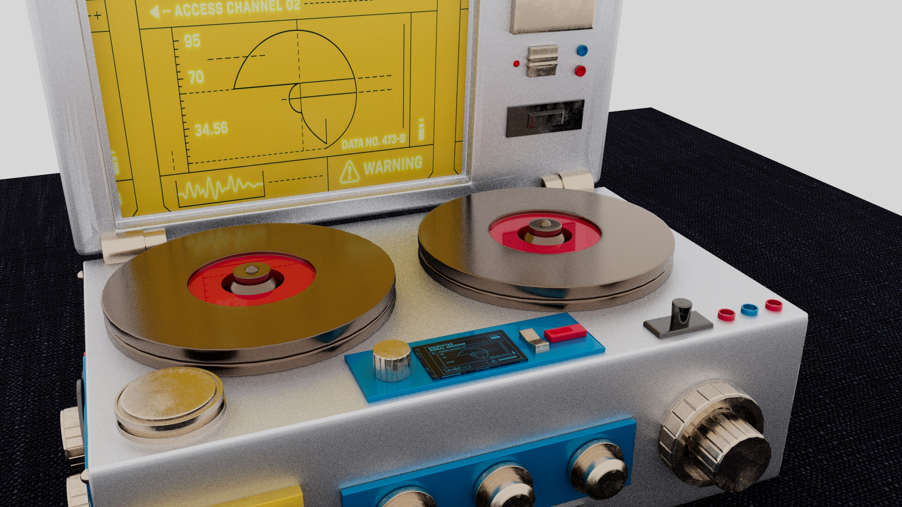

Game Design Minor / Autodesk Maya
3D Modeling
A curated Maya portfolio showing object modelling, environment building, material exploration, wireframe process and final rendered outcomes.
Assignment 01
Chessboard
Metallic chess pieces, reflective board surface and complete scene composition.
Assignment 02Washroom
Interior environment modelling with soft materials, lighting and room props.
Assignment 03Signal Decoder
Hard surface device modelling with UV mapping and sci-fi interface details.
Assignment 04Small Robot
Reserved project slot for the next robot modelling assignment.
Assignment Gallery
Each tab focuses on one 3D project, so the final render, process videos and key modelling decisions stay easy to scan.
Chessboard
A complete chess scene built around consistent object language, metallic material contrast and final render presentation.
Unified chess piece family
Six chess pieces were modelled as one visual system, balancing recognisable silhouettes with consistent proportions and material treatment.
Gold, copper and reflective surfaces
The board and pieces use metallic finishes and reflection to create a premium, polished final scene.
Render, wireframe, shaded mesh
The videos document how the model holds up from topology to final lighting.
Model Set
King, Queen, Bishop, Knight, Rook and Pawn.
Board Layout
Checkerboard surface and object placement.
Materials
Metallic chess pieces and glossy board finish.
Final Render
Lighting and camera angle for presentation.
Washroom
A full interior environment showing spatial layout, object modelling, soft material direction and warm lighting.
Modern princess washroom
The scene combines pink tiles, curved furniture, gold details and soft lighting to create a feminine interior mood.
Complete room prop set
Bathtub, vanity, mirror, toilet, cabinet, lamp, stool, window and small decorative forms were built for one environment.
Proportion and layout
The project strengthened interior spacing, scale control and material consistency across many objects.
Concept
Soft luxury bathroom direction.
Object Build
Furniture and bathroom fixtures.
Textures
Tiles, marble, metal and fabric details.
Lighting
Warm render mood and camera framing.
Signal Decoder
A hard surface modelling project focused on mechanical shape language, UV mapping, screen graphics and readable control details.

MaterialClose-upSci-fi encrypted signal decoder
The model combines reels, panels, buttons, knobs and screen UI into a functional-looking device.
Custom screen interface
Graphic screen elements were mapped onto the model to make the object feel purposeful rather than plain.
Mechanical readability
Clear front, side and top forms help the viewer understand the device from multiple angles.
Concept
Signal recovery device inspired by sci-fi tools.
Hard Surface
Panels, knobs, reels and control parts.
UV Map
Screen and surface graphic treatment.
Render
Final object presentation and material contrast.
Small Robot
A prepared space for the fourth 3D Modeling assignment once the robot files are uploaded.
Robot slot ready
Reserved for the final render, wireframe, shaded mesh, material screenshots and short reflection notes.
Creative Minor
More Game Design minor projects in the same portfolio family.